来源：https://b80fa9wrsf.feishu.cn/docx/JPlDdKuwRoTeWRxEM4vcEIRJnce
哈喽，大家好，我是李思念。
是生财「IP朋友圈运营」航海的教练，也是清醒派个体创业导师、心金文案写法创始人。
我在私域经营了9年，发朋友圈已经成为了日富一日的习惯，我的原创文案在朋友圈得到广泛传播，靠文字也链接了众多同频的朋友。
在意识到IP打造的重要性之后，我从21年开始重新定位知识付费赛道，用心经营自己的IP之后，近一年更是通过私域变现7位数。
前面带领了2月和5月的朋友圈运营航海，帮助无数船员通过朋友圈实现了自动成交。
而8月的航海，从「朋友圈运营」升级为了「IP朋友圈运营」，同时还即将迎来10月续航。
别看只是差“IP”这一个词，却代表了运营思维的更进一步，是更看重“人”在私域运营中的作用，更强调朋友圈的温度与个人品牌属性。
也让我们更能理解到：一个能让人越看越上瘾的朋友圈，离不开经营者丰富而独特的灵魂。
所以，今天思念希望尽可能全面地，带领大家梳理一遍IP朋友圈的思路，同时也来给大家分享下如何通过发朋友圈，让IP越来越值钱。
先给大家分享一张个人IP全域图，在我看来，想做成功一个IP，公域和私域是同样重要的。
有这样一句话：“不做公域的私域，是无源之水。不做私域的公域，是无本之木。”
也就是说，想做好IP的持续经营，就要公域+私域结合，公域做好曝光获客，私域做好沉淀转化。
二者交互作用，才是成功打法。
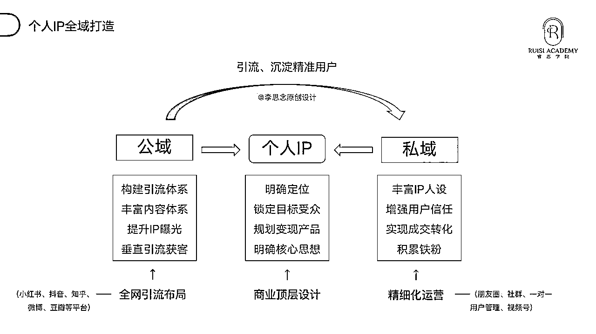
说以上是为了让大家建立一个「全局观」，那么今天思念要重点分享的是，其中IP的私域朋友圈运营。
为什么现在要重视私域？给到大家5个理由：
①私域能够更高效和高频的触达用户
②通过私域的精细化运营能够促进成交
③私域能够沉淀忠实的铁粉客户
④私域有助于实现更高客单价的营销
⑤做好私域客户维护，能够提升复购率
私域的本质是经营用户，是建立和维护用户关系。想达成私域的成交，用户关系是一大前提。
这就离不开要打造个人IP，离不开你的内容和价值的输出，离不开影响力和信任的建设。
传统成交是「先有需求再有成交」，而IP的成交则是「有信任就有成交」。
IP的核心是人，做私域，就是为了不断、不断地与用户之间产生触达，让大家看到更多样更真实的你，在这个过程中形成信任。
搞定用户的信任问题，离变现也就不再遥远了。
在私域的多个场景里，朋友圈是非常关键的。
我也想把它定义为，一个IP最好的表达场域。
丰富多彩的生活、随时随地的想法、各种碎碎念，你的日常你的情感你的态度，在朋友圈都可以无限制的发布。
包括各种长文、视频链接，也能够在朋友圈得到展示。
最近微信还上线了「朋友圈置顶功能」，可以把你的介绍和价值观放在这个位置，这也是一个IP更快速让大家了解你的方式，微信的支持更让我们看到了“个人即品牌”的前景。
朋友圈也是一对多最高效的成交场景，一条朋友圈可以触达1w私域好友（也可通过搭建账号矩阵提升触达量），只要你能用好，会在潜移默化间实现自动成交。
“发发圈就变现”，这件事真的不难。
创业就是从一个最小举动开始，先发起来朋友圈，我们会在这个过程中了解用户、获得反馈、不断完善自己、越来越强。
朋友圈到底可以发什么？
之前我在 这篇帖子中写过，今天再来进一步给大家补充一下。
我把常见的朋友圈内容分为三种：产品圈、生活圈、价值圈。
产品圈是促进成交吸金的，而生活圈是侧面烘托辅助打造个人IP和增强信任感的，而价值圈是吸引别人持续关注你的核心武器。
私域需要的是让用户感知到多维度、丰富的你，哪怕是再专业的选手，也有自己的业余生活，也有自己的兴趣爱好，还有自己的感悟故事，你要把这些融入到你的私域IP打造中，才能增加温度感。
这里直接给到大家一张我们内部培训的模板图👇🏻可以做以参考：
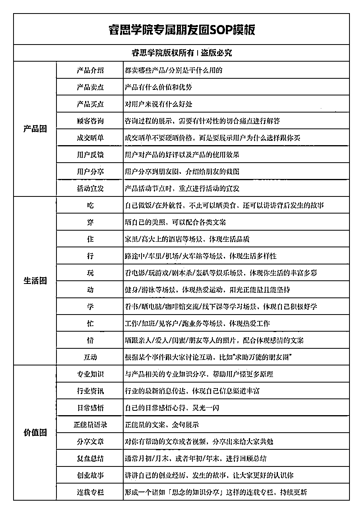
很多人看我朋友圈时，会说“思念你朋友圈看起来好高级，海报太美了”，但是把高级归因为海报好看、或者是排版美观这种原因，未免太过于浅表层的感知。
所以也来分享一下，高级的私域IP该如何做好朋友圈运营，更深层次是该输出哪些内容。
什么是高级的IP发圈方法论？
我认为「高级」的定义，不是高高在上，不是难以触及的仰望，而是既让受众看到作为一个IP的「权威」与「实力」，感受到有思想有个性的「态度」，同时又有亲近用户的「温度」与「人格魅力」。
总结成一个公式就是：
高级IP朋友圈＝权威+实力+态度+温度+人格魅力
因此，在我们发朋友圈的时候，需要注意着重体现这些方面，综合做好，就能提升吸粉力与成交力。
权威是为了告诉大家，你有什么样的背书，你有什么样的经验，你为什么在某个方面有发言权。
用户不会平白无故信一个陌生人的言论，除非你在这方面做出了成绩。
所以你要先让大家知道：你有资格说。
可以多在圈里分享一些自身的经历，自己做出的成绩，同时多发一些与专业相关的信息资讯，都能证明自己在这方面的权威与专业度。
个人经历、所做成绩、奖项荣誉、行业资讯
个人经历建议大家都要分享一下，可以写成一篇个人品牌故事，能够让用户更快速的认识你。
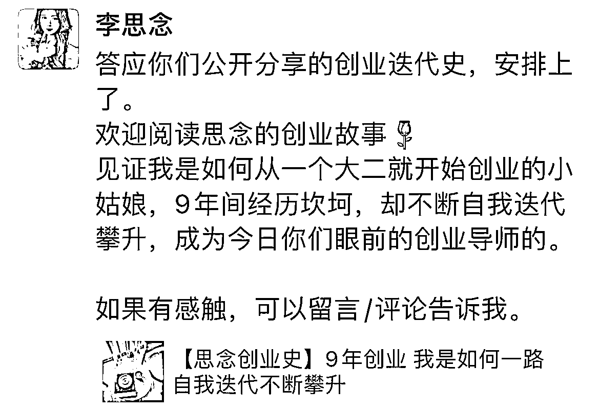
要多在朋友圈里分享你自己亲自做出来的成绩，亲身实践才是最好的证明。
我是做个人IP创业综合指导的，其中有包含一部分创业赛道小红书的教学，因此朋友圈里，也会分享我的小红书后台精准咨询的成绩。
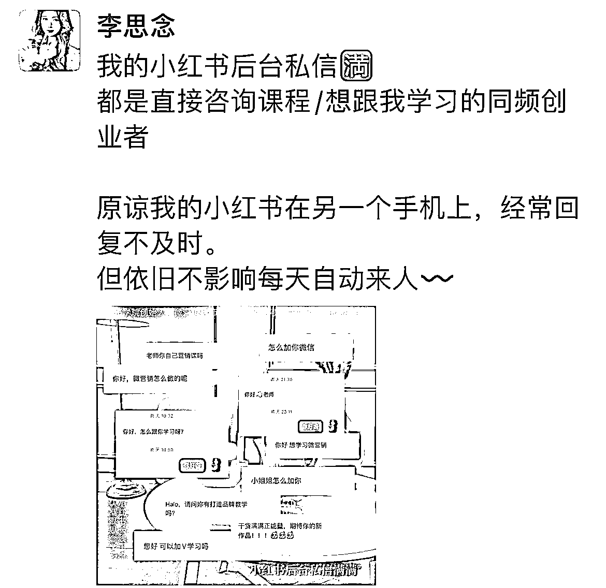
行业资讯也是可以发的，能够侧面体现自己在某个行业的信息渠道丰富。
还有比如获得的荣誉，证书，这些内容综合展示，更能体现一个IP的权威。
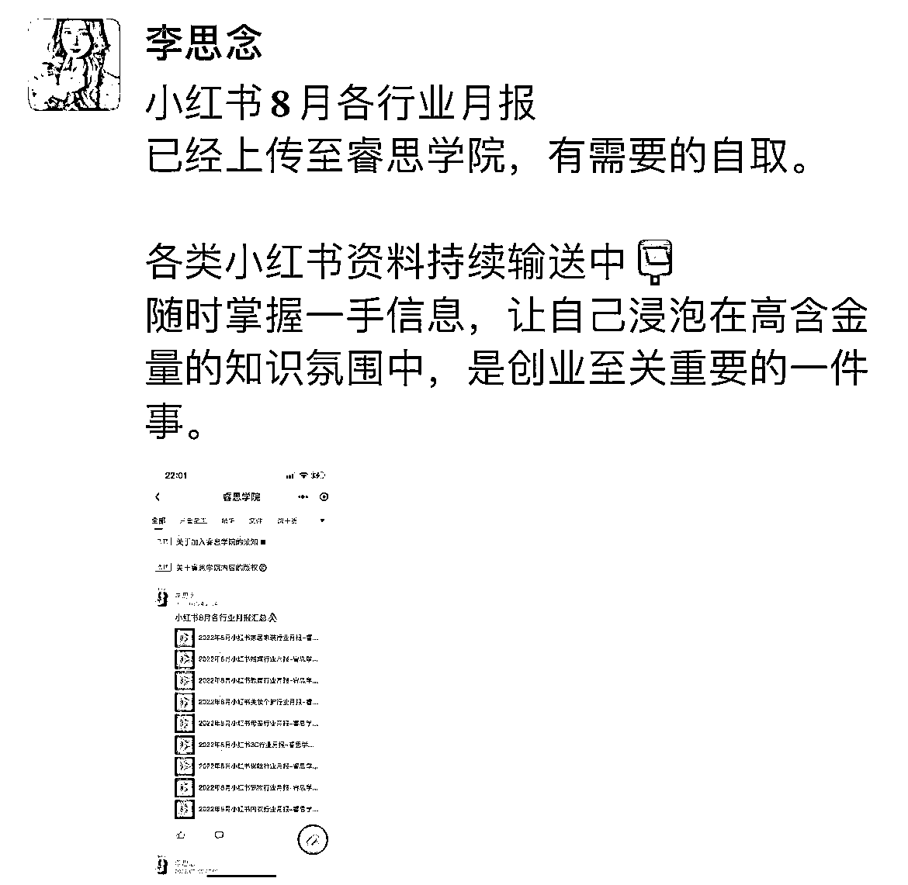
朋友圈要展示自己的实力，这也是最容易促成成交变现的一类内容，建议占比可以达到朋友圈的50%。
晒实力这里，我们需要注意一点：并不是一味地夸你自身有多牛，而是要去展示，在你的帮助下用户变得有多好。
而且还需要避免自嗨发圈，多从价值出发，借助用户的口去说出来你的厉害，而非自卖自夸。
成交晒单、交付过程、用户反馈、结果展示
比如我教大家通过文案自动成交，就会分享我的快速成交成果，直接晒成交单。
但是我晒成交单，不会是单纯的为了晒钱，我经常看到朋友圈有一些“收款+10086”的朋友圈，这类内容在如今，其实非常容易造成用户的反感，而且还会给到一种炫富嫌疑，并不利于一个IP的良性发展。
那像我这条，就是从“自动成交”这个点出发的，让大家看到我是如何做到自动成交的。同时还加上了一定的方法论输出，从而能够降低一条朋友圈广告的“硬度”，提升朋友圈干货价值。
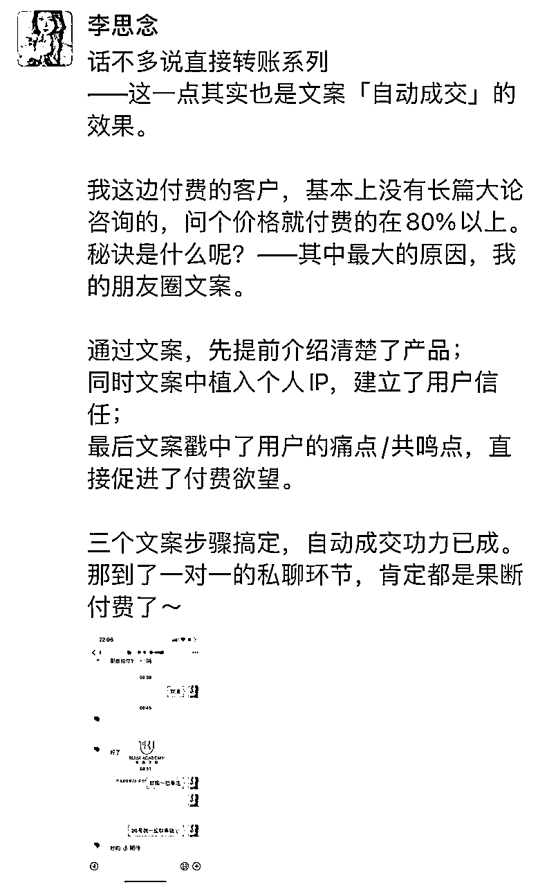
给客户/学员的交付过程，也要进行分享展示。
不方便展示的内容，可以进行打码，然后通过文案来进行简单的总结。
下面这条，就是我给学员语音交付的截图，为了美观也做了一下晒单图设计，但重点还是文案部分，汇总了一场指导都包含了哪些内容，也能让其他人更了解到我的交付过程。
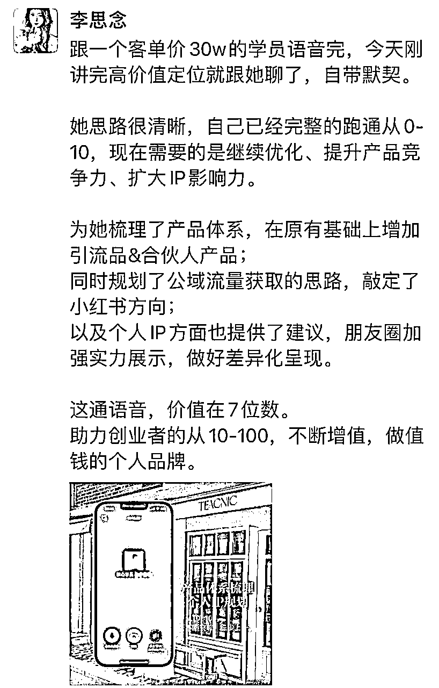
这一条就是属于用户反馈了，是我学员的变现报喜。
这类内容要多从成绩出发去展示，让大家看到给对方带来的效果，而非过分强调自己多牛、产品多牛。
就是需得注意，让用户读起来的时候不会感觉自卖自夸成分过重，低调谦虚的表述会更讨喜。
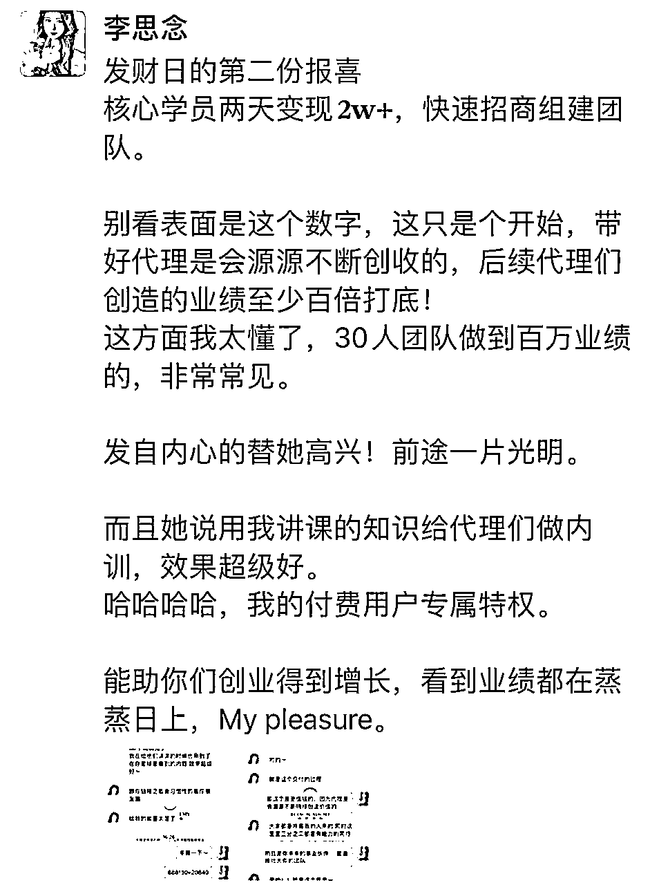
关于结果的展示也同样要有，可分为个案&合集两种形式，比如这条我带大家做的小红书热门数据，就是用合集海报来展示的。
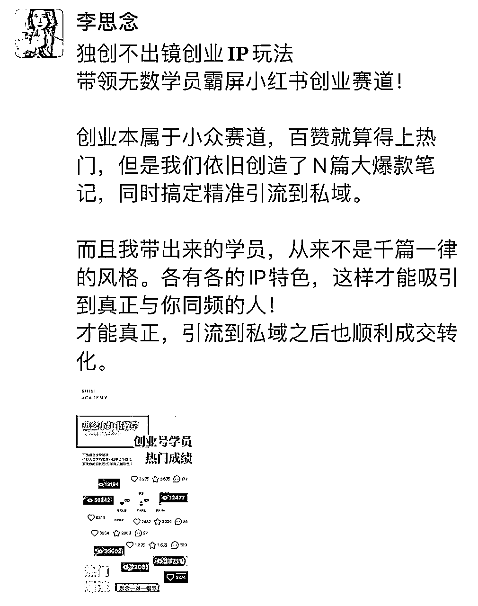
一个人之所以与他人不同，是因为我们各有各的活法，各有各的人生态度。
面对不同的人生与社会问题，会随之产生多方面的态度，比如创业态度、销售态度、生活态度、情感态度、为人处事的态度……
而这些态度，我们都可以通过发圈的表达，塑造自身IP的独特性。
也许不经意的一个观点输出，就能让用户“粉”上你。
观点见解、原则框架、规划展望
要经常在朋友圈大胆表达自己的观点态度，举个例子，我这条朋友圈，就是在表达我面对交付的态度，我是一个非常注重细节的人。
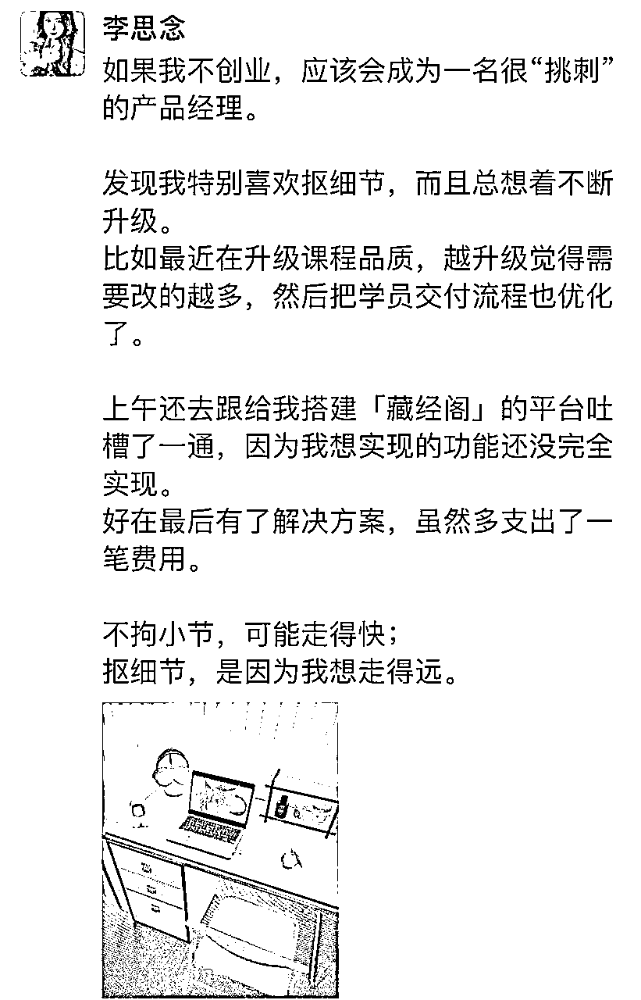
再比如这一条，是在表达我对于逼单这件事的态度，我不提倡逼单，更希望真诚对待学员，彼此100%信任，帮助到那些真正需要帮助的人。
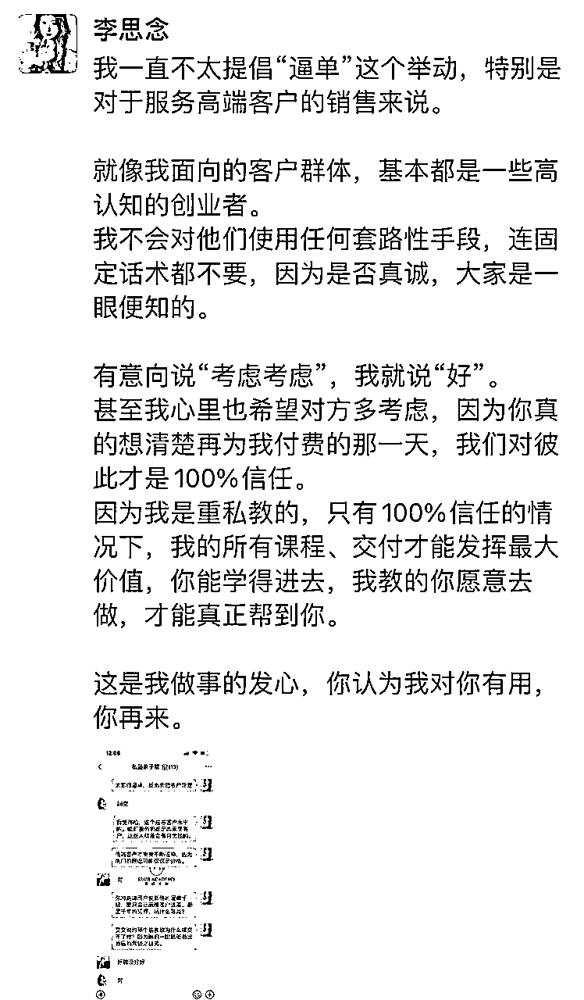
下面这条，是我对我睿思学院未来发展的态度。
如果你恰好做的是创始人IP，那么一定要多去表达自己对于品牌的展望，因为你的态度，即代表一个品牌的态度。
一个有态度的品牌，往往会更吸粉。
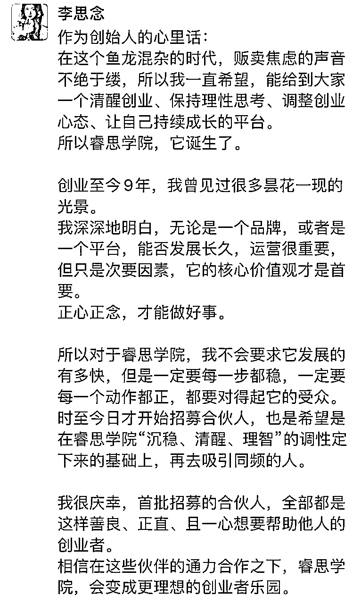
这一条，是关于为人处事的态度。
看上去似乎与业务的关系不大，但是这类内容的输出也是必不可少的，因为能够让大家清晰的感知到你是一个有思考的人，非常有助于吸引同频者。
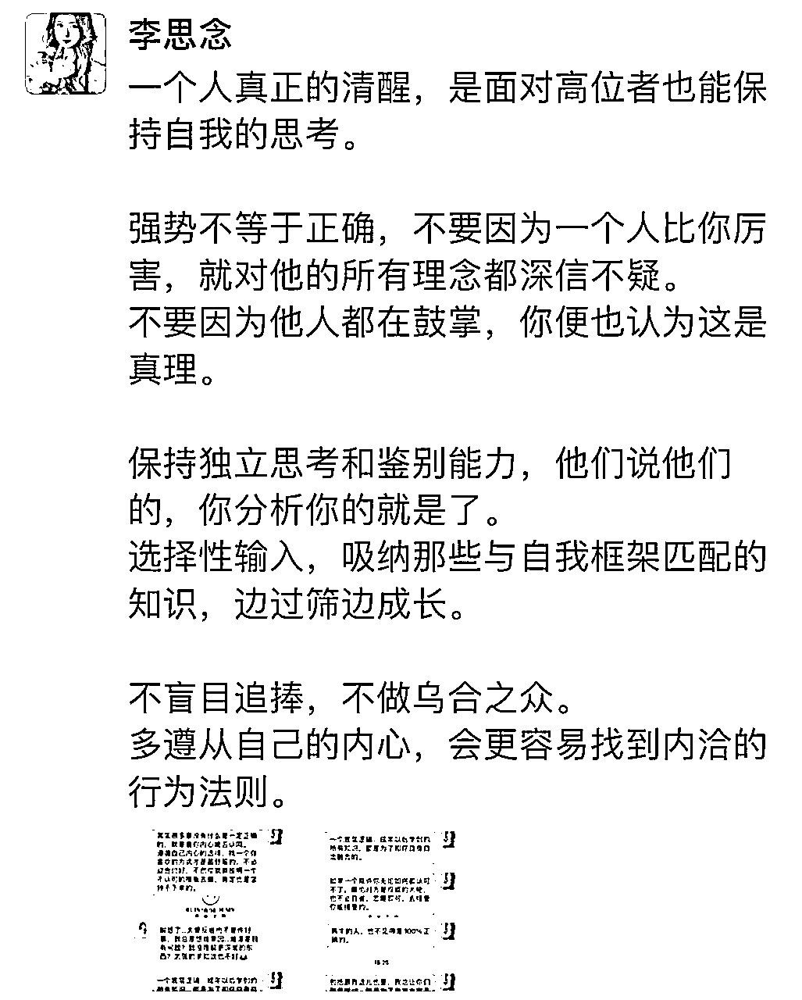
如果说前者态度是体现一个IP的理性，那么温度就会更偏向于体现IP的感性。
一个讨喜的IP，非常重要的一点特质是亲和力。
而私域，本身就是人与人之间近距离的链接，是一个温暖的场域。
在经营朋友圈的过程中，我们要拉近与用户之间的关系，就要学会塑造IP的温度。
情感表达、贴心服务、暖心事件、团队氛围、节日祝福、互动福利
IP要注重朋友圈的情感表达。这是立秋那天发的朋友圈，那天给我团队的小伙伴们每个人都安排上了一杯奶茶，送上秋天的第一份惊喜。
在表达彼此之间喜悦的同时，也表达了我们的价值观，提醒大家活在当下，用心生活。
这就相当于把温度进行了二次传递，也让更多朋友圈的好友感受到我们团队的温暖与美好。
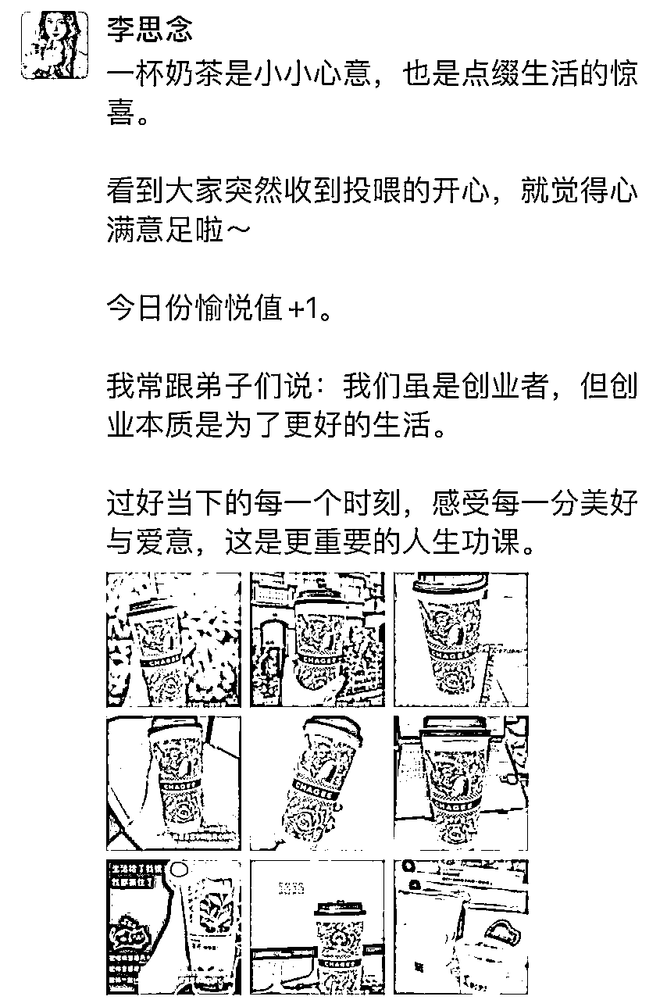
这一条，是记录跟一个新学员之间发生的故事。
一份不经意间的善意，换来了一个忠实的铁粉，也由此感受到爱的回溯。
把这样的暖心事件分享出来，也会让大家更能感受到你身上的温度。
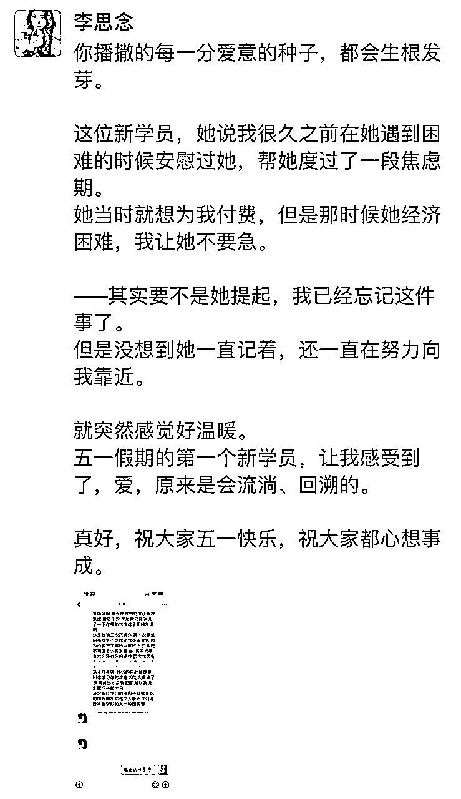
团队的氛围也可以在朋友圈里进行展示，能够让大家感知到朋友圈的背后是有血有肉的丰富灵魂。
这一条是记录在训练营中给大家搞福利活动的场景，寓教于乐，边带大家学习提升，边为大家提供情绪价值和惊喜。
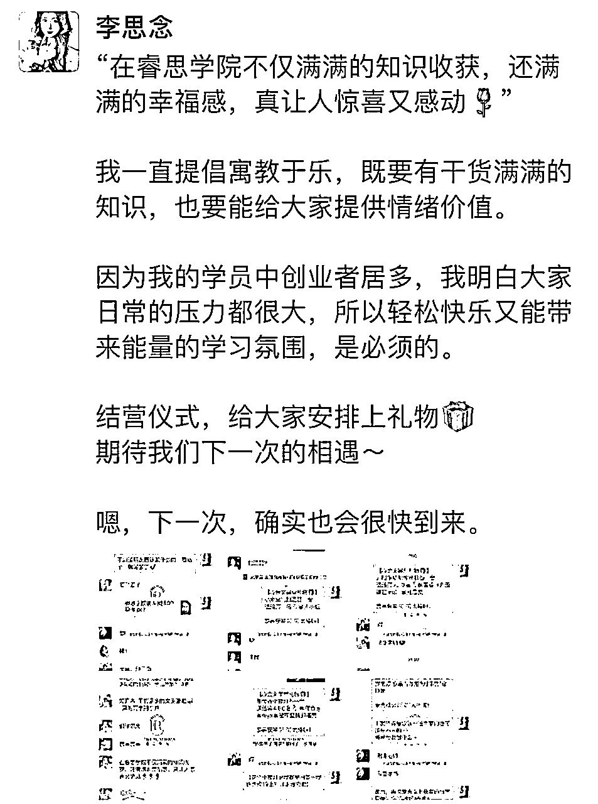
有爱意，即有温度。
他人表达的感谢和表白，也能传递温度。
如果有人正好对你表示感谢，那么记得朋友圈也要分享出来，让这份爱被大家都能看见。
有时候，我们之所以会喜欢和欣赏一个IP创业者，可能仅仅是因为他散发的人格魅力。
通过在朋友圈里对真实的自我的展示，能够让更多人感受到你的人格魅力。
比如可以多去分享一下自己的兴趣爱好，呈现自己的生活方式，表达自己的个性，通过提升朋友圈美感度让大家得知你的审美品味，通过输出原创内容展示自己的思维与创造力。
生活方式、兴趣爱好、个性特长、人生感悟、复盘总结
朋友圈里要多分享生活，呈现出用户会向往的生活状态，激发用户的情感共鸣。
举个例子，比如你是卖香薰精油的，可以呈现在香气中与爱人一起听音乐的美妙时刻，从而让大家对这种生活心生好感；
比如你是一名收纳师，可以呈现日常生活中的“断舍离”，从而让大家逐渐认可你的理念；
再比如你是全职创业者，可以呈现咖啡馆自由、居家办公的惬意状态，从而吸引想跟你一起做事业的伙伴。
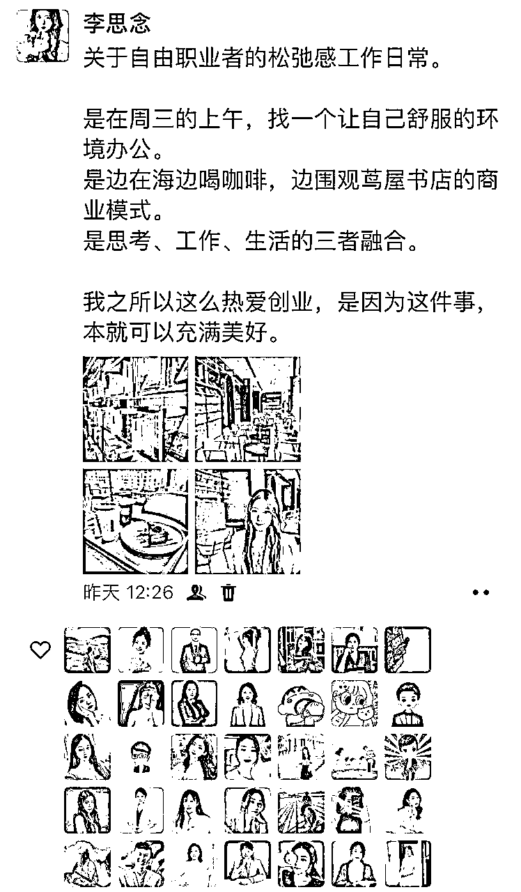
我喜欢阅读，也会经常在朋友圈里晒一下阅读的过程，有时候还会有一些对于阅读书籍的感悟。
如果你日常也有一些兴趣爱好，比如跑步、游泳、烹饪、探店……也可以分享出来，能够让大家了解更丰富的你，感知你的人格魅力。
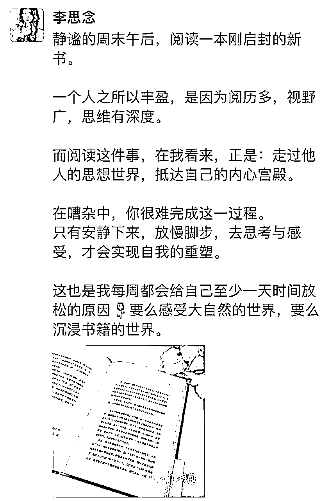
像这一条，既是对自己社交喜好的表达，又展示了自己的性格与观念。
这样的内容也是可以去发的，你喜欢什么，你想成为什么样的人，请大胆的写下来。
按照吸引力法则来说，多给到积极的暗示，就相当于向宇宙下订单，从而能够感召到同样的能量磁场，整个宇宙都会来帮你，你也慢慢会成为想成为的那种人。
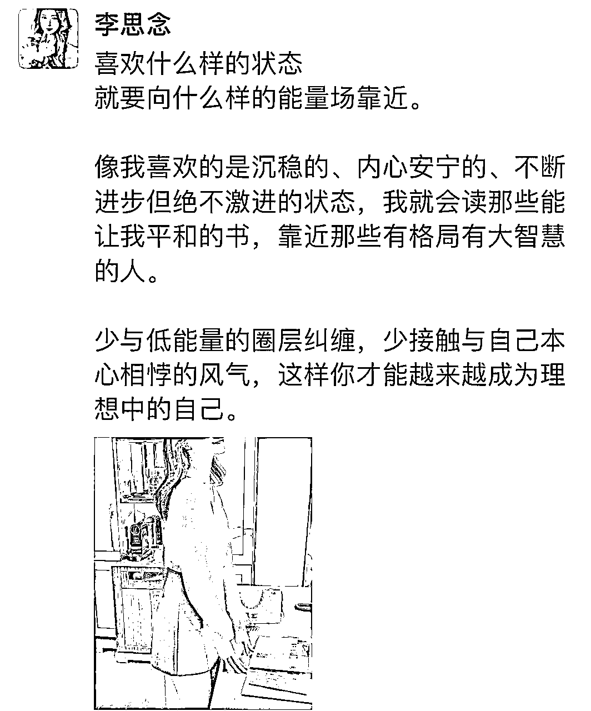
复盘时，也是一次很好的自我魅力释放的机会。
可以通过复盘，让大家看到你的思考，感受到你的成长。
比如我每月初发圈的复盘，通常会采用这种形式来发，在朋友圈内的点赞量也都是非常高的，大家也可以尝试一下。
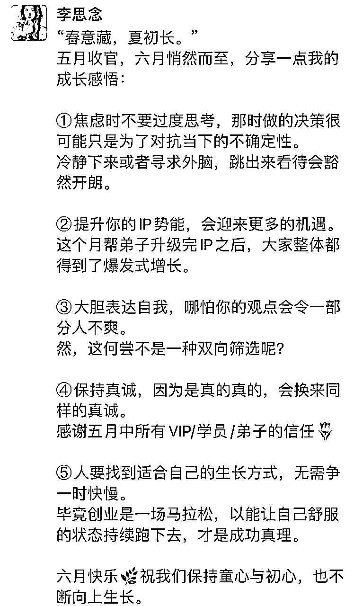
最后记得，这个过程，一定要保持真诚。
因为，表达到底真不真诚，用户是真的能感受得到。
看上去高级的IP，其实修炼的都是基本功。我看到的那些优秀IP们，他们一直在做的事就是：持续真诚表达，坚持原创输出。
而所谓铁粉，也就是通过一条条朋友圈的吸引，逐渐积累起来的。
最后，再来给大家分享5条，让IP越来越值钱、不断升值的发圈习惯。
很多小伙伴会说到一个困扰是，经常没有素材去发圈。
但其实对我们来说，缺乏的并不是素材，而是洞察力。
洞察力分为向内和向外，向内是洞察自身和周遭，向外是洞察用户和市场。
我会下意识留心生活中的一切场景，比如看到美景/美食/有趣的事随手拍个照，说不定什么时候就能用得上；也会从每一段聊天对话中看是否能找到发圈的营销点。
我朋友圈有一半的内容都是聊天截图形式发布的，比如意向咨询/成交/学员指导/创业交流，遇到有价值的内容，就会快速截图留存，这些都是能够帮助朋友圈丰富的最佳素材。
同时，也会在沟通中洞察用户的需求和喜好，了解市场上的热点，从而掌握用户思维，这会有助于我们的文案角度更能吸引到用户。
很多人谈起IP就觉得要“立人设”、要“造假”，但实际上，这是一种偏颇的理解，是被很多伪营销概念误导了。
思念建议大家，做IP发朋友圈，一定要卸下“表演感”。
什么是“表演感”？
简单点说，就是「不真实」，要么让人觉得一眼假，要么充满距离感。
比如太过完美无瑕的形象，比如硬凹僵假的人设，比如刻意营造美却过于标准化的图片，又比如没有丝毫情绪起伏仿佛AI生产的文字。
经营IP的逻辑其实和经营人生是相通的，我们要允许自己会有懈怠，要允许自己的不完美。
做IP，并不是让你变成一个十全十美的假面人，而是让大家看到你的丰富灵魂，看到你的有血有肉，所以根本不需要有太多「偶像包袱」。
如何减少“表演感”呢？
①讲故事
多去讲一讲自己身上的故事，多去袒露真实的自己。讲故事不是去讲那些光鲜亮丽的一面，而是也要把你的失意不得志，同样讲出来。
人生本就是有起有伏的，谁都不可能时刻保持高能量状态，所以你的故事，也不该是一片高光。
让大家看到现在成功的你，背后也有过的辛酸经历，大家能够代入到你的故事中，就会对你多一份好感。
②诉心事
不要只一味的晒成绩，也要多说一说你背后的心路历程。
你的所思所想是怎样的，你的情绪起伏是如何的，你有哪些不为人知的小心思，都可以说给大家听。
说不准某一点，就唤起了大家的共鸣。我很多次在朋友圈诉心声，都会有人说“哇，我也这么觉得”，这就又多了一个同频朋友。
③说观念
可以借由针对某个事件、某个热点的看法，凸出你的价值观，让用户觉得你是个有深度的人。不要去网上复制粘贴，这是在增加“表演感”，打造IP永远要抱着真诚的态度。
多在朋友圈展露真实的自己，多表达真诚的想法，这就是最长久的IP经营之道。
打造个人IP的好处之一就是，它是能够跨越时间与周期的。
我记得有一个意向，是在加了我3年后才来为我付费的，她当时就说：“加了你好友好多年，发现你越来越好，当时加的很多导师都不做了，而你还在做，所以我想跟你学习。”
当用户发现你3年前和3年后在做的事一样，发现你多年前和现在的观点一致，是会对你多一层信任滤镜的。
有一种靠谱，需要「持续稳定」来证明。
针对发圈方面，我想主要提一下其中观点的一致性，很多IP的信任破灭，往往来源于用户发现他前后观点相反，一会儿一个样，这就会让大家觉得不够真实。
恒定的观点，更有利于大家对你的IP形成稳定记忆。所以我们在发圈的时候，也需要注意要有自己的核心理念，要让自己的态度观点保持一致。
而持续也很重要，当你一直坚持出现在朋友圈，大家是能从中感受到你的用心经营，这个过程，复利自然而升。
朋友圈是有磁场的，不知道做私域营销的小伙伴，有没有这样的感觉？
——当你发圈状态差的时候，询单也寥寥无几，越少人问越没动力发圈，从而逐渐没落；
而当你发圈状态好的时候，往往会收到更多的钱，成交变得更容易，而且能形成正向的增强回路，更多人会被你呈现的高势能所吸引。
你的能量状态，会影响到用户对你的观感。
想更丝滑的自动成交，一定要先拉升自己朋友圈的势能。
想增强势能，日常需要在我们的朋友圈输出中有意识地加强情绪渲染，而同时，还可以通过制造「事件」，扩大IP影响力。
这些事件可以和我们的变现产品有关联，比如某某新品发售，某某公开课免费听；也可以只是烘托你的IP，比如坚持打卡晨跑100天、坚持早起1年……
持续搞事情，通过事件营销，可以快速把你的能量和影响力释放开来，让更多人感知到。
分享了这么多，最后一点想提醒大家一下，别忘记我们IP发朋友圈，需要聚焦主线任务。
也就是，你的主定位是什么、主赛道是什么、主要目标受众是谁，要围绕这三者进行主要输出。
朋友圈可以丰富，可以有支线的点缀，但是千万别偏离主线。
在一个垂直领域深耕，才会让你的朋友圈变得更有价值，才会让你的IP越来越值钱。
最后总结一下以上的分享：
IP一定要重视朋友圈的打造，这既是IP表达的场域，又是能够直击自动成交的场景；
而大家在经营朋友圈的过程中，也要有意识地加强自己的IP呈现，让你的IP不断增值。
祝大家在持续经营朋友圈的过程中，不断成长，日富一日！